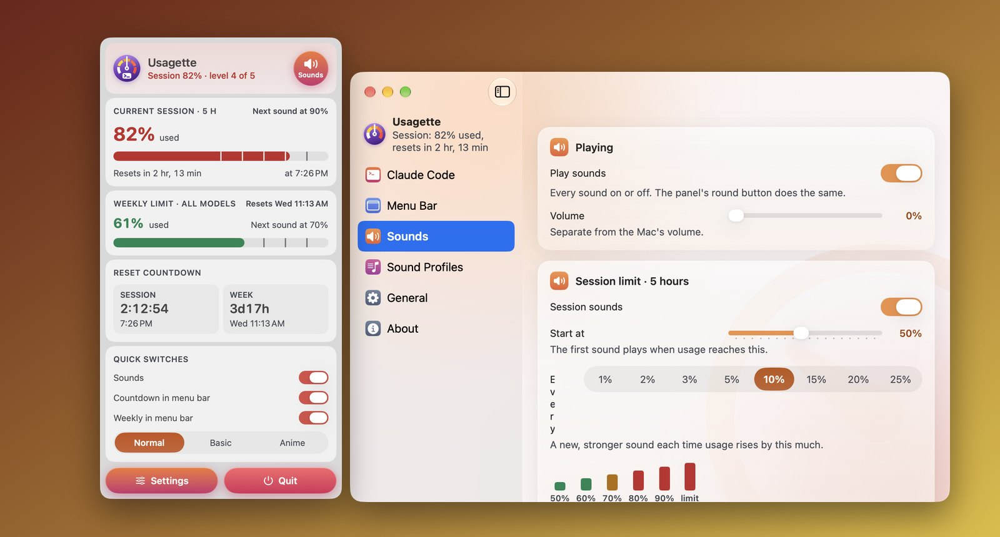

Usagette
Bruksgrensene dine i menylinjen, med en lyd når de stiger.
Visual simulation. Usagette monitors local Claude Code session limits directly in your Mac menu bar without cloud API keys.

Hva den gjør
Usagette bor i menylinjen på Macen og viser hvor mye av Claude-bruksgrensene dine du har brukt: grensen for 5-timersøkten, ukegrensen på 7 dager og en levende nedtelling til hver tilbakestilling. Slå av eller på delene av visningen du vil ha, og åpne panelet for hele bildet.
- Leser fra statuslinjen i Claude Code. Usagette setter opp et lite statuslinjeskript som lagrer tallene Claude Code allerede rapporterer. Din egen statuslinje fortsetter å virke. Tallene oppdateres mens du bruker Claude Code; mellom øktene går nedtellingen bare videre.
- Lyder som stiger med bruken. Velg hvor lydene starter og steget mellom dem. Hvert steg er ett nivå sterkere, i fem nivåer, så du hører hvor nær du er uten å se. Det finnes også lyder for å nå en grense og for en tilbakestilling.
- Profiler. Normal (myke klokkespill), Basic (standard macOS-lyder), Anime (gnister og stemmereplikker, litt morsommere) og Custom (dine egne lydfiler). Du kan også importere dine egne lydprofilfiler.
- Stille når det skal være stille. Stille timer, en dempebryter og stillhet mens Macen er låst.
- Snarveier og åpne ved innlogging, som resten av familien.
Krever macOS 14 Sonoma eller nyere og Claude Code. Kommer snart til Mac App Store. Bruksgrenser vises av Claude Code for abonnement som har dem.
Gratis lydprofiler
Flere lyder til Usagette, gratis å laste ned. Hver av dem stiger gjennom de fem nivåene og har egne lyder for grensen og for tilbakestillingen.
- Last ned8-Bit Adventure. Mynter og power-ups, så feilpip og alarmer for lav helse, et game over-skrik ved grensen og en fanfare ved tilbakestilling. Lyder av Juhani Junkala, public domain (CC0).
- Last nedArcade Announcer. En spillkommentator: rolige meldinger først, «Hurry up!» og «Look out!» mens du stiger, «Game over» ved grensen. Stemmer av Kenney, public domain (CC0).
- Last nedMusic Box. Små opptrekksmelodier som går ned, langsommere og dypere, når grensen nærmer seg. Originale lyder, laget for Usagette.
- Last nedRetro Console. Chiptune-pip fra en innbilt 8-bits konsoll: power-ups, varselsirener og en game over-melodi. Originale lyder, laget for Usagette.
- Last nedSinging Bowls. Først én myk skål, dypere og tettere mens du stiger, og en gong ved grensen. Originale lyder, laget for Usagette.
- Last nedSonar Dive. Ubåtsonar: enkeltstående ping, så raskere, et dykkehorn ved grensen og bobler på vei opp. Originale lyder, laget for Usagette.
Du legger til en ved å åpne Innstillinger › Lydprofiler i Usagette og velge Importer …, eller ved å slippe den nedlastede filen der. Du kan også pakke den ut og dobbeltklikke på profilen.
Unexpected lockouts vs Usagette
Monitor your Claude Code session and weekly limits directly from the macOS menu bar.
| Aspect | Manual Guesswork / Web Dashboard | Usagette |
|---|---|---|
| Sudden Lockouts | Mid-coding error: 'Usage limit reached until 3:00 PM' | Live countdown in menu bar so you pace complex programming tasks |
| Status Line Integration | Manually checking web dashboards or guessing limits | Reads Claude Code status metrics automatically from your local CLI |
| Model Awareness | No visibility into how models drain quota | Visual feedback highlights token burn across Opus, Sonnet and Haiku |
| Proactive Alerts | Finding out you are locked out only when a prompt fails | Gentle native chime or banner alert before your quota runs dry |
| Privacy & Setup | Complex API keys and cloud account sign-ins | Zero API keys required; reads local terminal session output safely |
Personvern i ett avsnitt
Usagette har ingen nettverkstilgang, ingen konto og ingen sporing, og ingenting forlater Macen din. Den leser én fil som statuslinjeskriptet skriver, i .claude-mappen du tillater den å bruke. Den fullstendige personvernerklæringen sier det samme mer utførlig.
Flere apper fra samme utvikler
Små apper som hver gjør én ting godt. Ingen kontoer, ingen reklame, og ingen av dem sporer deg.
 StatuetteCPU, minne, disk og nettverk i menylinjen.Mac
StatuetteCPU, minne, disk og nettverk i menylinjen.Mac TocketteEn tidtaker, ett drag fra menylinjen.Mac
TocketteEn tidtaker, ett drag fra menylinjen.Mac ZonetteAlle tidssonene du bryr deg om, ett klikk unna.MaciPhone og iPadAndroid
ZonetteAlle tidssonene du bryr deg om, ett klikk unna.MaciPhone og iPadAndroid
LunetteMånen og solen med ett blikk.MaciPhone og iPadAndroid- LunaretteMånekalenderen i fire tradisjoner.MaciPhone og iPadAndroid
 PausetteMilde pauser for øynene og ryggen.Mac
PausetteMilde pauser for øynene og ryggen.Mac PoisetteSitt rett, minnet på av AirPods-ene du har på.MaciPhone og iPad
PoisetteSitt rett, minnet på av AirPods-ene du har på.MaciPhone og iPad HushetteRolig bakgrunnslyd som aldri gjentar seg.MaciPhone og iPadAndroid
HushetteRolig bakgrunnslyd som aldri gjentar seg.MaciPhone og iPadAndroid TapsodyLyden av et mekanisk tastatur mens du skriver.Mac
TapsodyLyden av et mekanisk tastatur mens du skriver.Mac ThrumlinePulsen din, direkte i menylinjen.Mac
ThrumlinePulsen din, direkte i menylinjen.Mac NightjarHold Mac-en våken. Helt ærlig.Mac
NightjarHold Mac-en våken. Helt ærlig.Mac UmbretteDemp alt unntatt vinduet du jobber i.Mac
UmbretteDemp alt unntatt vinduet du jobber i.Mac PrompetteEn teleprompter rett under kameraet.MaciPhone og iPadAndroid
PrompetteEn teleprompter rett under kameraet.MaciPhone og iPadAndroid TalletteEn papirrull til regnestykkene dine.MaciPhone og iPadAndroid
TalletteEn papirrull til regnestykkene dine.MaciPhone og iPadAndroid ProbetteAlt det tekniske om en mediefil, i klare ord.MaciPhone og iPadAndroid
ProbetteAlt det tekniske om en mediefil, i klare ord.MaciPhone og iPadAndroid BindetteGjør lydfiler om til én skikkelig lydbok.MaciPhone og iPadAndroid
BindetteGjør lydfiler om til én skikkelig lydbok.MaciPhone og iPadAndroid LettretteÅpne winmail.dat- og .msg-filer slik de ble sendt.MaciPhone og iPadAndroid
LettretteÅpne winmail.dat- og .msg-filer slik de ble sendt.MaciPhone og iPadAndroid Nhanh TaySett fire svar i rekkefølge. Fort.MaciPhone og iPadAndroid
Nhanh TaySett fire svar i rekkefølge. Fort.MaciPhone og iPadAndroid PinetteNotater du har innen synsvidde.MaciPhone og iPadAndroid
PinetteNotater du har innen synsvidde.MaciPhone og iPadAndroid SquiggoTegn sammen med en vennlig kompis.MaciPhone og iPadAndroid
SquiggoTegn sammen med en vennlig kompis.MaciPhone og iPadAndroid ForemanJobber, tilbud og fakturaer for håndverkere.MaciPhone og iPadAndroid
ForemanJobber, tilbud og fakturaer for håndverkere.MaciPhone og iPadAndroid TilewakeEt skyvepuslespill der bildene våkner.MaciPhone og iPadAndroid
TilewakeEt skyvepuslespill der bildene våkner.MaciPhone og iPadAndroid Chăm luyệnØving for vietnamesiske barneskoleelever, lest høyt.MaciPhone og iPadAndroid
Chăm luyệnØving for vietnamesiske barneskoleelever, lest høyt.MaciPhone og iPadAndroid SalahBønnetider for hele familien.MaciPhone og iPadAndroid
SalahBønnetider for hele familien.MaciPhone og iPadAndroid